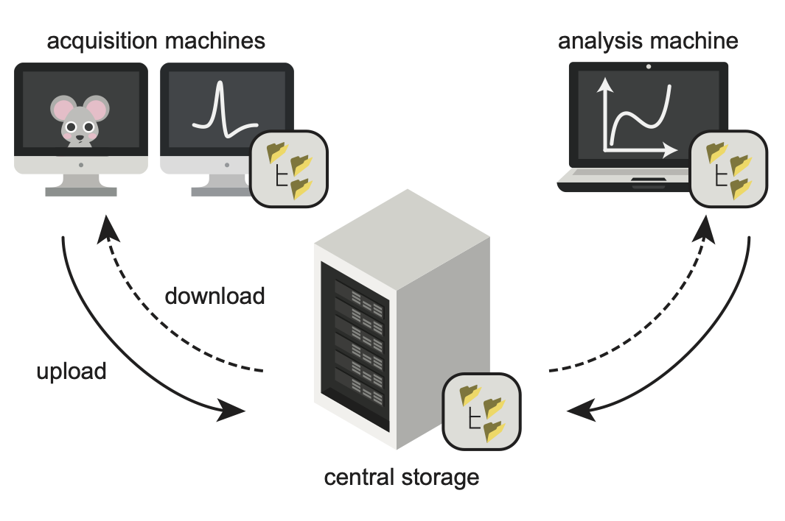
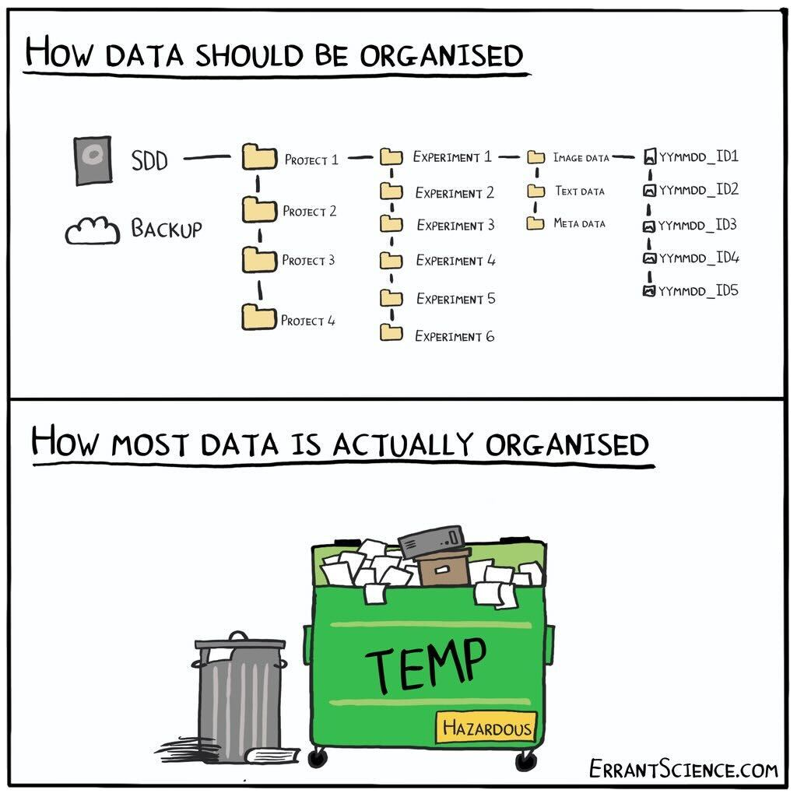

Posts from London
Trusted by design (part 3): embrace radically open communication
- 11 February 2026
Open-source software is public, yet much of the communication around it may happen in private emails, internal Slack channels and meetings with no minutes. This disconnect can erode the very trust that openness is meant to build. What if communication were radically open—a habit of constant, multi-way interactions visible to anyone who cares to look?
Trusted by design (part 2): release early, release often
- 04 February 2026
‘Release early, release often’ is an often-repeated mantra, popularised by Eric S. Raymond in his 1997 essay “The Cathedral and the Bazaar”. I hadn’t fully grasped its significance until I switched from academic research to full-time software development. How early? How often? And why is this so critical to establishing and maintaining trust?
Trusted by design (part 1): define your software’s mission and scope
- 28 January 2026
No project exists in a vacuum. Open-source software is a vast web of inter-connected and inter-dependent tools. When creating a new tool, your number one job is to carve out its place in the web consciously, openly and from the outset. How can you approach that?
Trusted by design (intro): set up your research software for community adoption
- 28 January 2026
So, you want to create an open-source research software package—and not just for yourself or your group. You’d like people around the world to use it, and even contribute to it. How do you persuade them it’s worth their time?
Exploring automatic ways of extracting a pose estimation skeleton for C. elegans
- 03 December 2025
Segmenting C. elegans using SAM-2 and extracting skeletons.

GSoC 2025: brainglobe-registration
- 15 September 2025
Hi, I’m Saarah. The intersection of healthcare and software development has always been important to me, which is why spending my summer with the Neuroinformatics Unit has been the perfect opportunity to bring together the work I love.
derotation: a Python package for correcting motion artifacts in rotating multiphoton movies
- 01 July 2025
Passive or active rotation of the head (yaw) is an ethologically relevant movement for rodents, enabling them to orient their bodies, avoid obstacles, and locate food sources. In neuroscience, controlled head rotation is a key experimental paradigm for studying the vestibular system and its influence on sensory processing. Electrophysiological recordings have demonstrated the impact of such movements on neural activity in the visual cortex, as shown by Velez et al. (2018).

We are participating in Google Summer of Code 2025!
- 28 February 2025
Join us over the summer and contribute to open-source neuroscience tools

Managing neuroscience projects with datashuttle
- 07 May 2024
Create, validate and transfer standardised project folders
Data organisation with NeuroBlueprint
- 02 May 2024
The challenge of unstandardised data in systems neuroscience
Why and How to Translate Scientific code from MATLAB to Python: A Guide for Researchers
- 23 June 2023
Author: Laura Porta